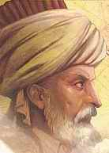

Evliya Çelebi (1611-1684)

Ünlü seyyah Evliya Çelebi, ömrünün büyük bir kýsmýný seyahatlerde ve gezilerde geçirmiþtir. Çok küçük yaþlardan itibaren, büyüklerinden duyduðu seyahat maceralarýnýn etkisinde kalmýþ ve büyük merak salmýþtýr. Eserinde ifade ettiðine göre; Peygamber Efendimizi (asm) rüyasýnda görmüþ, "Þefaat Ya Resulallah!" diyeceði yerde heyecandan dili sürçmüþ ve "Seyahat Ya Resulallah!" diyerek Yüce Peygamberin tebessümüne ve dileðinin kabul edildiði müjdesine nail olmuþtur. Saray çevresinde yakýn akrabasý ve çok sayýda dostu olmasýna raðmen hiçbir zaman makam-mevki sevdasýna kapýlmamýþ, ömrünü seyahatlere adamýþtýr. Yaþadýklarýný, gördüklerini ve karþýlaþtýðý hadiseleri aktarmaya çalýþmýþ, yazdýðý Seyahatname'si ile araþtýrýcýlara önemli bir eser býrakmýþtýr. Risale-i Nur'da "meþhur Ýslam seyyahý ve tarihçisi" olarak vasýflandýrýlmýþtýr.Evliya Çelebi, 1611 yýlýnda Ýstanbul Unkapaný'nda doðdu. Babasý sarayda kuyumcubaþý olan Derviþ Mehmet Zýllî Aðadýr. Ailesi daha önceden Kütahya'nýn Zereðen mahallesinde yaþamakta iken fetihten sonra Ýstanbul'a gelip yerleþmiþtir. Çocukluðundan itibaren iyi bir eðitim gören Evliya Çelebi ilk derslerini babasýndan aldý. Daha sonra medrese eðitimi gördü. Hocasý Evliya Mehmed Efendiden hafýzlýk dersleri aldý. Kur'an-ý Kerim'i hatmederek hafýz oldu. Babasý da hat, tezhip ve nakýþ derslerini vererek eðitimine katkýda bulundu.
Evliya Çelebi, Enderun'a giderek eðitimini devam ettirdi. Sesinin güzel olmasýndan ötürü burada musiki eðitimi de aldý. Daha sonra dayýsý Melek Ahmed Paþa vasýtasýyla padiþah IV. Murad'ýn huzuruna çýkarýlarak takdim edildi. Padiþahýn emriyle saraya alýnarak burada özel eðitim gördü. Hat ve musiki derslerinin yanýnda nahiv ve tecvit derslerini okuyarak eðitimini sürdürdü. Enderun'daki eðitimi dört yýl devam etti.
Çocukluk yýllarýndan itibaren seyahate ilgi duyan Evliya Çelebi'nin bu ilgisi, aralarýnda babasýnýn da bulunduðu büyüklerinden duymuþ olduðu seyahat maceralarýnýn anlatýlmasýndan kaynaklanmaktadýr. Kanuni Sultan Süleyman döneminden itibaren anlatýlan seyahat maceralarý fazlasýyla ilgisini çekmekteydi. Seyahate çýkma isteðinin dayanýlmaz hale geliþini kendi eserinde anlatmaktadýr; 19 Aðustos 1630 tarihinde, Muharrem Ayý aþure gecesine denk gelen bu gecede bir rüya gördüðünü yazmaktadýr. Rüyasýnda Peygamber Efendimizi (asm) gördüðünü, elini öperken heyecana kapýldýðýný ve "Þefaat Ya Resulallah" diyeceðine, "Seyahat Ya Resulallah" sözlerini sarf ettiðini belirtmektedir. Bu talep karþýsýnda Peygamber Efendimizin tebessüm ettiðini, isteðinin kabul edildiðinin kendisine müjdelediðini sözlerine eklemektedir.
Evliya Çelebi, Ýstanbul dýþýna ilk seyahatini babasýndan izin almadan 1640 yýlýnda Bursa'ya yaptý. Babasý daha sonra seyahat yapmasýna izin verdiði gibi, yaptýðý seyahatlerle ilgili izlenimlerini kaleme almasýný da tavsiye etti. Bu arada Ýstanbul'a yakýn olan ve aile baðlarýnýn da bulunmasý itibariyle Kütahya, Ýzmit ve Manisa'ya kýsa süren seyahatlerde bulundu.
Uzak mesafeli seyahatine, Trabzon valiliðine tayin edilen Ketenci Ömer Paþa ile birlikte, deniz yoluyla çýktý. Azak Kalesi'nin geri alýndýðý 1641 yýlýndaki sefere katýldý. Kýrým'a Bahadýr Giray'ýn yanýna giderek ona misafir oldu. 1645 yýlýnda gerçekleþtirilen Yanya seferine katýldý. Bir yýl sonra Erzurum Beylerbeyi Defterdarzade Mehmed Paþa'nýn muhasipliðine getirildi. Bu vesileyle doðu illerini, Azerbaycan ve Gürcistan'ýn bazý bölgelerini görme fýrsatýný elde etti. Bu sefer ve seyahatlerinde görevli olarak mektup götürüp getirmekle görevlendirildi.
1648 yýlýnda Ýstanbul'a dönen Evliya Çelebi, ayný yýl Þam'a gitti ve üç yýl boyunca bölgeyi gezdi. Dönüþünde Ýstanbul üzerinden Rumeli'ye geçti. Bir süre Sofya'da bulundu. Daha sonra Avusturya, Teselya, Gümülcine, Selanik ve Arnavutluk yörelerini dolaþtý. Aralarýnda akrabalýk baðý bulunan Melek Ahmed Paþa'nýn sadrazam olmasý, hayatýnýn önemli bir dönüm noktasýný oluþturdu. Devlet mekanizmasýný daha yakýndan takip etme ve cereyan eden hadiselere yakýndan þahit olma fýrsatýný elde etti. Yaþanan hadiseleri, ekonomik sýkýntýyý, bazý isyan ve haksýz uygulamalarý açýk bir þekilde eserine kaydetti. Melek Ahmed Paþa'nýn görevinden azledilmesi ve Özi beylerbeyliðine tayin edilmesi üzerine tekrar seyahate çýktý.
Evliya Çelebi, 1653 yýlýnda Ýstanbul'a döndü ve uzun süre burada kaldý. Melek Ahmed Paþa'nýn Van beylerbeyliðine tayin edilmesi üzerine Anadolu'ya gitti. Anadolu'nun birçok beldesini dolaþtýðý gibi, Baðdat ve Ýran taraflarýný da gezdi. Yeniden Özi beylerbeyliðine atanan Melek Ahmed Paþa ile birlikte buraya hareket etti. Yapýlan sefere katýldý. Bu arada Kýrým Haný IV. Mehmed Giray'ýn yanýnda bulunduðu sýrada Rus ve Kazaklara karþý yapýlan sefere katýldý.
Anadolu ve Rumeli'de bir çok yeri gezip dolaþan Evliya Çelebi, bir ara Sofya'da vergi tahsil görevinde de bulundu. Birkaç sefere katýldýktan sonra Ýstanbul'a döndü. Akabinde Fazýl Ahmed Paþa ile birlikte 1663 yýlýnda Avusturya seferine katýldý. Uyvar kalesinin fethedilmesinden sonra Avrupa'da bazý bölgeleri dolaþtý. Eserinde muhtelif vesilelerle Bohemya, Ýsveç, Hollanda ve Brandenburg gibi bir çok bölgeyi gezdiðini ifade etmektedir.
Evliya Çelebi Kafkaslarý, Volga boylarýný, Rumeli'nin muhtelif yerlerini, Girit'i, Mora'yý, Aydýn ve Menteþe sahillerini, Ýstanköy ve Rodos adalarýný, Suriye'nin aralarýnda bulunduðu çok sayýda bölgeyi dolaþtý. Bir ara dini vecibeyi yerine getirmek maksadýyla Hicaz'a gitti. Akabinde Mýsýr, Sudan ve Habeþistan'ý dolaþtý. 1684 yýlýnda Mýsýr'dan Ýstanbul'a döndükten sonra vefat ettiði tahmin edilmektedir.
Evliya Çelebi, hiçbir zaman makam-mevki hýrsýna kapýlmadý. Hiç evlenmedi. Uzun süre seyahat etme imkâný bulmasý; ailesinin zengin olmasý, yaptýðý hizmetlerden elde ettiði gelir, ganimetlerden kendisine de pay verilmesi, kafilelerle birlikte seyahat ettiði için fazla giderinin olmamasý gibi sebeplere dayanmaktadýr. Bu arada Melek Ahmed Paþa'nýn da seyahatlerinde ve bu imkaný elde etmesinde önemli katkýsý oldu.
Evliya Çelebi gezip gördüðü, karþýlaþtýðý her þeyi akýcý bir üslupla Seyahatnamesine kaydetti. Genel olarak eserinde ifade güzelliði hakimdir. Eserinde Osmanlý Devleti ile komþularý arasýndaki iliþkiler hakkýndaki bilgiler de yer almaktadýr. Gördüklerini samimi ve sade bir ifade ile kaleme almýþtýr. Bilgi aktardýðý halkýn diline ve konuþma þekillerine özel önem verdiði görülmektedir. Gezdiði yerlerde geçen olaylarý aktarýrken kullanýlan sözcüklerden örnekler vermesi, bazý sözcüklerin söyleniþ biçimlerini aktarmasý, halk aðzýný esas almasýndan kaynaklanmaktadýr. Eser böylece, araþtýrýcýlara önemli inceleme ve yorum imkaný saðladýðý gibi, muhtelif konularý iþlemesinden dolayý deðiþik açýlardan deðerlendirme yapma imkâný da saðlamaktadýr.
Evliya Çelebi, insanlarla ilgili bilgileri verdiði gibi kültür varlýklarý için de önemli bilgilere yer verdi. Karþýlaþtýðý insanlar arasýnda söylenen türküler, halk þiirleri, inançlar, eðlenceler, karþýlýklý iliþkiler, halk oyunlarý, kýlýk-kýyafet vb. bir çok konu hakkýnda önemli bilgileri detaylý bir þekilde kaleme aldý. Gezdiði yörelerde bulunan cami, mescid, han, hamam, çeþme, saray, konak, kilise, manastýr, kale, kule, sur, yol, havra gibi eserler hakkýnda da önemli bilgilere yer vermek suretiyle araþtýrmacýlar için önemli bir eser vücuda getirdi.
Risâle-i Nur'da Evliya Çelebi'den, "meþhur Ýslâm seyyahý ve tarihçisi" olarak söz edilmektedir. Bediüzzaman, Diyarbakýr Sulh Ceza Mahkemesinde yaptýðý savunmada, adil mahkemelerin, Cenab-ý Hakk'ýn Adil isminin tecelli ettiði yerler olduðunu ifade etmek suretiyle mahkemelerin önemine iþaret etmektedir. Tarih boyunca hak namýna hareket eden mahkemelerin hak tanýmaz maðrur zalimlere huzurlarýnda boyun eðdirdiðini ve bu özelliklerinden ötürü yüce makamlar olduklarýný izah etmektedir. Haysiyetleri ayaklar altýna alýnan mazlumlarýn, biçarelerin dayanak noktalarý olduðunu, sultanlarla kölelerin eþit þartlarda muhakemeye tabi tutan mahkemeleri hatýrlatýr. Bu arada Ýslam tarihi boyunca, bazý hakim ve mahkemelerin sergilediði örnek davranýþlara atýfta bulunur. Bir örnek olarak, Evliya Çelebi'den iktibasla Fatih Sultan Mehmed ile bir Rum mimarýn yargýlandýklarý mahkeme safahatýna deðinir. (Ýþaratü'l-Ý'caz, 1997, s. 272-73)